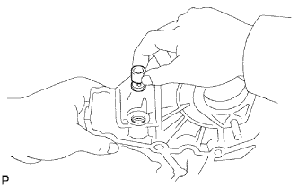
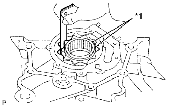
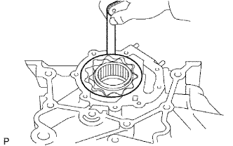
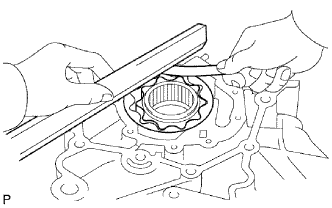

МАСЛЯНЫЙ НАСОС > ПРОВЕРКА |
| 1. INSPECT OIL PUMP RELIEF VALVE |
|  |
Coat the valve with engine oil and check that it falls smoothly into the valve hole by its own weight.
| 2. INSPECT OIL PUMP DRIVE GEAR |
|  |
Install the rotors to the timing belt case with the marks on the rotors facing outward. Check that the rotors revolve smoothly.
| *1 | Mark |
Inspect the gear tip clearance.
Using a feeler gauge, measure the clearance between the drive and driven gear tips.
|  |
Inspect the gear body clearance.
Using a feeler gauge, measure the clearance between the driven gear and timing belt case.
|  |
Inspect the gear side clearance.
Using a feeler gauge and precision straightedge, measure the clearance between the gears and precision straightedge.